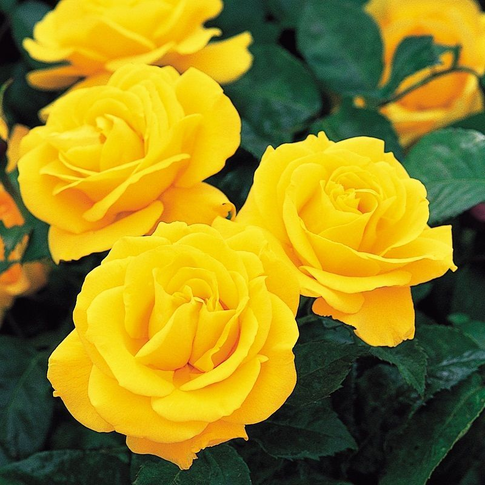

Floribundia
Es un pequeño arbusto con hojas corto pecioladas, moderadamente firme, oblongas u oblongo-oblanceoladas, poco y acuminadas, enteras o crenadas, con una base redondeada. Las inflorescencias masculinas en espigas paniculadas, rara vez simples, terminales. Las flores femeninas en espigas terminales laxas simples. El fruto en forma de cápsula de 3 celdas


VOLVER AL PRINCIPIO
|